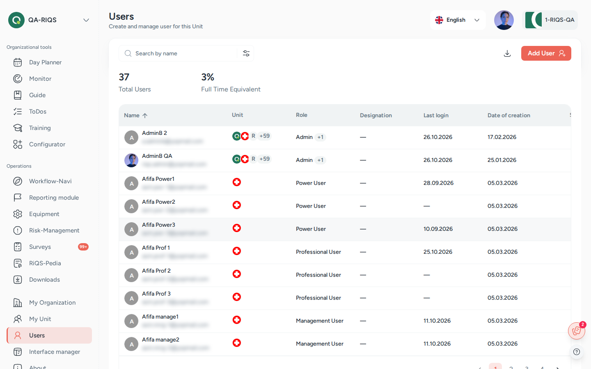

Users¶
In one sentence: Invite people to RIQS, give them a role in one or more units, and control whether they can log in. Menu: Users (your own details: your picture or name → Profile) · Status: Live

Users: name, unit, role, last login and date of creation. Screens show test data.
What it is¶
Every person who works with RIQS needs a user account. The account says who the person is (name, email, professional details), which units they work in and which role they have in each unit. The role decides what they can see and do. See Roles & permissions.
Think of it like the staff list and key cabinet of a practice: the list says who works where, and the keys say which doors each person may open. Deactivating a user is like taking back the keys without removing the person from the records.
A user is invited by email. The invited person sets their own password with the link in the email. Only then can they log in. Each unit has a maximum number of active users, set by the subscription. See Subscription & billing.
Key terms¶
| Term | Meaning |
|---|---|
| Role | What a user may do: RiQS Administrator, Group Administrator, Administrator, Power User, Management or Professional. |
| Function role | An extra job on top of the role, for example CIRS Officer or Equipment Officer. It is given inside the module concerned, not in the user form. |
| Primary unit | The user's main unit. RIQS opens it after login. Shown as Primary Unit. |
| Other units | Further units the user may work in, each with its own role. |
| Active / Inactive | Only active users can log in. Only active users count against the unit's user limit. |
| Activation email | The invitation email with a link to set a password. Shown as Send activation E-mail / Resend activation E-mail. |
| Group admin | A user who manages several organisations. Set with Assign as group admin. |
| Administrator for all units | A user who is Administrator of all units of the chosen organisation(s). Set with the Same for all department tick box. |
| Audit-safe mode | A unit setting where data can hardly be deleted. See Organisation & units. |
Who uses it¶
| Role | What they typically do here |
|---|---|
| RiQS Administrator | Manages any user, including administrators, in any organisation; the only role that deletes activated users in audit-safe units. |
| Group Administrator | Manages users of all organisations in the group; can make other users group admins. |
| Administrator | Manages users of the own organisation; can give users several units, make users Administrator and delete users; changes email addresses. |
| Power User | Invites and maintains users of the own unit, activates and deactivates them, makes users Power User of the own unit. |
| Management | Invites and maintains users of the own unit, activates and deactivates them. |
| Professional | Looks up colleagues; keeps own profile and password up to date. |
How it works¶
Invited (inactive, email not verified) → Password set (email verified) → Active ⇄ Inactive → (Deleted)
- Create. An authorised user fills in the Add User form: personal details, contact details, professional details, organisation, units and roles.
- Invite. RIQS sends an activation email to the new user, as long as the unit has a free place.
- Activate. The user opens the link and sets a password. The email is now verified and the user is active.
- Work. The user logs in and lands in the primary unit.
- Change. Admins edit details, add units, change roles or change the email address.
- Deactivate. Switch the Status off. The user can no longer log in, but all their records stay. The place in the unit becomes free.
- Delete (rare). Removes the user account. In audit-safe units this is restricted (see Rules).
The user list shows Name, Unit (primary and other units), Role, Designation, and for admins also Last Login, Date of Creation and Status. A badge warns when the unit has reached its active user limit, for example "Active user limit reached (10/10)".
How to …¶
How to add (invite) a user¶
Who can do this: RiQS Administrator, Group Administrator, Administrator, Power User, Management 1. Open Users and click Add User. 2. Step 1 (General & professional information): enter first name, last name, display name, email address and date of birth (all required). Add optional details: salutation, gender, nationality, languages, photo, phone, academic title, workload, GLN, ZSR, K and Ku numbers, qualifications and remarks. 3. Click Next. Step 2 (Organisational): choose the organisation, then the Primary Unit and the role in that unit. Add designation, date of joining, business phone and extension if you like. 4. Optional: tick User can create process guide (only for Power User or Management in units that use Process Guide). 5. Optional (admins only): click to add another unit, tick Same for all department or Assign as group admin. 6. Click Save.
Result: "User created successfully". The user appears in the list as inactive and receives the activation email.
How to resend the activation email¶
Who can do this: RiQS Administrator, Group Administrator, Administrator, Power User, Management 1. In Users, find the inactive user. 2. Click Resend activation E-mail in the row.
Result: A new email is sent. The button is disabled if the user has already set a password or if the unit is full.
How to set a password for a user¶
Who can do this: RiQS Administrator, Group Administrator, Administrator (initial activation of another user) 1. Open an inactive user's details. 2. Click Set password, enter the new password twice and save.
Result: The user can log in with this password. Not possible while the unit is full.
How to edit a user, add units or change roles¶
Who can do this: RiQS Administrator, Group Administrator, Administrator, Power User, Management (with limits, see Rules) 1. In Users, open the row's menu and click Edit User. 2. Change the details. On the Organisational step, change the role per unit, or add or remove units. 3. Click Save.
Result: "User updated successfully". If you edited your own account, some changes apply after you log out and in again.
How to change a user's email address¶
Who can do this: RiQS Administrator, Group Administrator, Administrator, Power User, Management (see Open questions) 1. Edit the user and change Email Address. RIQS checks that the address is not already used. 2. Click Save.
Result: The user receives an email at the new address and logs in with the new address and the old password.
How to activate or deactivate a user¶
Who can do this: RiQS Administrator, Group Administrator, Administrator, Power User, Management 1. In Users, find the user. 2. Switch the Status toggle on or off.
Result: The user is active or inactive. You can only switch a user on if they have set their password and the unit has a free place.
How to delete a user¶
Who can do this: RiQS Administrator, Group Administrator, Administrator. In audit-safe units: these three only while the user has never been activated; after activation only the RiQS Administrator. 1. In Users, open the row's menu and click Delete. 2. Confirm Delete User.
Result: The user is removed. If you delete yourself, you are logged out.
How to search, filter and download the user list¶
Who can do this: search and filter: everyone who can open Users; download: everyone except Professional 1. Type in the search box to find by name. 2. Click the filter button and choose organisation, unit, name, role, designation, creation date range or status (All, Active, Inactive). Click Apply Filter. 3. Click the download button (Export report) to create an Excel file of the list.
Result: The list shows only matching users. The report is created in the background and appears in your downloads.
How to update your own profile and password¶
Who can do this: everyone 1. Open your Profile. 2. Overview and Organisation tabs show your details, units and roles. Click edit to change your general and professional information or your photo. 3. Security tab: enter your current password and the new one twice. The screen shows the password rules (at least 8 characters, upper- and lower-case letters, a number and a special character).
Result: "Password updated successfully". Your profile changes are saved.
Rules to know¶
- Required fields: first name, last name (max 25 characters each), display name, email and date of birth. Date of joining is optional and stays empty unless entered.
- Email must be unique. RIQS checks it while you type.
- User limit: each unit has a maximum number of active ("authorised") users. Only active users count. A user created in a full unit stays inactive and cannot be activated until a place is free.
- Several units: only RiQS Administrators, Group Administrators and Administrators can give a user more than one unit. Users of several units who are not admins choose the unit at login. Admins use the Unit Switcher.
- Primary unit at login: admins always start in their primary unit.
- Who can give which role:
- Administrator: only RiQS Administrators, Group Administrators and Administrators. The new Administrator must be a Power User.
- Power User in one unit: the above and Power Users.
- Power User with access to several units: only RiQS Administrators, Group Administrators and Administrators.
- CIRS Officer at organisation level: only RiQS Administrators, Group Administrators and Administrators.
- Who can edit whom:
- Only RiQS Administrators can edit RiQS Administrators.
- Only Administrators and RiQS Administrators can edit an Administrator.
- A Group Administrator cannot edit another Group Administrator who works in different organisations.
- Cannot be deleted: the Organisation Admin and Deputy Admin of an organisation (warning "Cannot delete an organization admin user"), and RiQS system administrators.
- Hidden group admins: Power Users, Management and Professionals do not see Group Administrators in the user list or in downloaded lists.
- Audit-safe mode: a user who was never activated may be deleted by RiQS Administrator, Group Administrator and Administrator; after activation only the RiQS Administrator may delete. Otherwise deactivate.
- Emails sent: activation email on create (and on Resend activation E-mail); email to the new address when the email is changed. If the activation link has expired, the user sees a message and an admin must resend the email.
- Professional replaces the old role "Employee A". The old "Employee B" role no longer exists.
Who can do what¶
| Action | RiQS Administrator | Group Administrator | Administrator | Power User | Management | Professional |
|---|---|---|---|---|---|---|
| See the user list | ✅ | ✅ | ✅ | ✅ | ✅ | ✅ |
| See Last Login, Creation date, Status | ✅ | ✅ | ✅ | ✅ | ✅ | ❌ |
| Add (invite) user | ✅ | ✅ | ✅ | ✅ | ✅ | ❌ |
| Edit user | ✅ | ✅ (see Rules) | ✅ (see Rules) | ✅ (see Rules) | ✅ (see Rules) | ❌ |
| Change a user's email | ✅ | ✅ | ✅ | ✅ | ✅ (Q1) | ❌ |
| Activate / deactivate | ✅ | ✅ | ✅ | ✅ | ✅ | ❌ |
| Resend activation email | ✅ | ✅ | ✅ | ✅ | ✅ | ❌ |
| Initial activation of another user (Set password) | ✅ | ✅ | ✅ | ❌ | ❌ | ❌ |
| See group admins outside the own primary unit | ✅ | ✅ | ✅ | ❌ | ❌ | ❌ |
| Give a user several units | ✅ | ✅ | ✅ | ❌ | ❌ | ❌ |
| Make a user Administrator (must be a Power User) | ✅ | ✅ | ✅ | ❌ | ❌ | ❌ |
| Make a user Group Administrator | ✅ | ✅ | ❌ | ❌ | ❌ | ❌ |
| Make a user Power User (one unit) | ✅ | ✅ | ✅ | ✅ | ❌ | ❌ |
| Make a user Power User with access to several units | ✅ | ✅ | ✅ | ❌ | ❌ | ❌ |
| Make a user CIRS Officer at organisation level | ✅ | ✅ | ✅ | ❌ | ❌ | ❌ |
| Buy user licences | ✅ | ✅ | ✅ | ❌ | ❌ | ❌ |
| Delete user (regular version) | ✅ | ✅ | ✅ | ❌ | ❌ | ❌ |
| Delete user, audit-safe, never activated | ✅ | ✅ | ✅ | ❌ | ❌ | ❌ |
| Delete user, audit-safe, after activation | ✅ | ❌ | ❌ | ❌ | ❌ | ❌ |
| Create and download user reports and lists | ✅ | ✅ | ✅ | ✅ | ✅ | ❌ |
| Change own password and profile | ✅ | ✅ | ✅ | ✅ | ✅ | ✅ |
Connected modules¶
- Organisation & units: users belong to units; the unit's number of full-time users decides the user limit.
- Subscription & billing: buying more users raises the limit.
- Roles & permissions: what each role may do in every module.
- Function roles (CIRS Officer, Equipment Officer and others) are given in the modules themselves, for example Incident Reports and Equipment.
- The user's qualifications are used in trainings and equipment.
Open questions¶
- Changing email by Management: the Roles & Rights sheet lets Management edit user data, which includes the email address. The feature list says only "Power User or above" may change a user's email. This page follows the sheet. Please confirm.
- Date of joining in exports: the downloaded user list shows 01.01.1970 for users without a date of joining (known issue found in testing). It should be empty.
- Password rules: the profile page asks for a special character; the activation page does not. Should the rules be the same?
Last reviewed: 2026-10-26